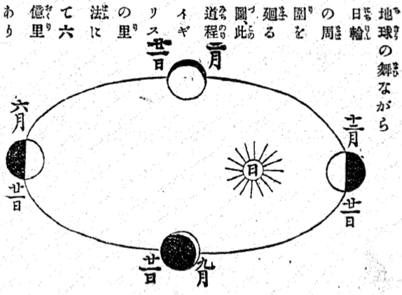
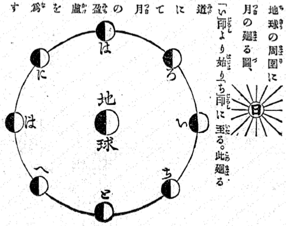
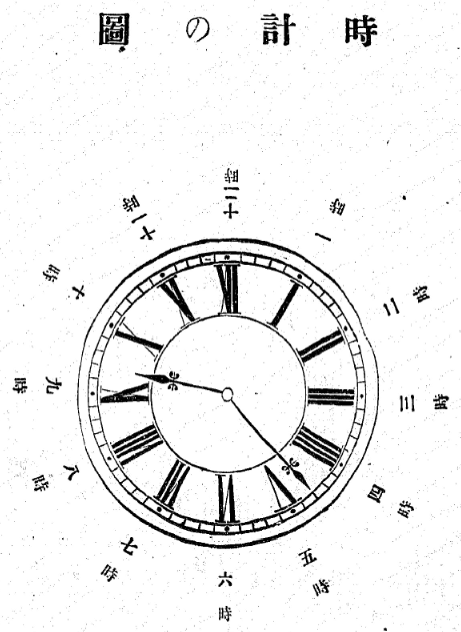

此度大陰暦を
止て
大陽暦となし、明治五年十二月三日を明治六年一月一日と
定めたるは一年
俄に二十七日の
相違にて
世間にこれを
怪む
者も
多からんと
思ひ、
西洋の
書を
調て
彼の
國に
行はるゝ
大陽暦と、
古來支那、
日本等に
用る
大陰暦との
相違を
示すこと
左の
如し。
大陽とは
日輪のことなり。
大陰とは
月のことなり。
暦とは
こよみのことなり。
故に
大陽暦とは
日輪を
本にして
立たるこよみ、
大陰暦とは
月を
本にして
立たるこよみと
云ふ
義なり。
抑も
此世界は
地球と
唱へ
圓きものにて
自分に
舞ひながら
日輪の
周圍を
廻ること、これを
譬へば
獨樂の
舞ひながら
丸行燈の
周圍を
廻るが
如し。
獨樂の
自分に
一度廻るは
即ち
地球の
自轉といふものにて、
行燈の
方に
向たる
半面は
晝となり、
裏の
半面は
夜となり、この
一轉を
一晝夜とするなり。
斯く
獨樂の
舞ひながら
行燈の
周圍を
廻るは
即ち
地球の
公轉と
云ふものにて、
行燈を
一廻まはりて
本の
塲所へ
歸る
間に、
春夏秋冬の
時候を
變じ、一年を
爲すなり。
扨日輪の
周圍に
地球の
廻る
道は六
億の
里數あり。この六
億里の
道程を三百六十五日と六
時（實は五時四十八「ミニウト」四十八「セカンド」なれども先つ［＃「先つ」はママ］六時とするなり）の
間に
一廻して
本の
處に
歸るなり。
即ち
地球の
自轉にて
云へば三百六十五
度と、
四半分轉る
間に六
億里の
道を
走ることなり。
大陽暦はこの
勘定を
本にして
日輪の
周圍に
地球の
一廻する
間を一年と
定めたるものなり。
然るに
此一廻の
間、
丁度三百六十五日ならば千年も万年も
同じ暦にて
差支なき
筈なれども、六十五日の
上端に六
時といふものありて
毎年六
時づ
 後
後れ、四年
目には四六二十四
時、
即ち一日の
後となるゆへ、四年目には一日
増して
其間に
地球を
走らしめ、
丁度本の
處に
行付を
待つなり。
即是閏年なり。
右の
如く
大陽暦は
日輪と
地球とを
照し
合せて
其互に
釣合ふ
處を
以て一年の
日數を
定たるものゆへ、
春夏秋冬、
寒暖の
差、
毎年異なることなく
何月何日といへば
丁度去年の
其日と
同じ
時候にて、
種を
蒔くにも、
稻を
刈るにも
態々暦を
出して
節を
見るに
及ばず。
去年の
彼岸が三月の二十一日なれば
今年の
彼岸も
丁度其日なり。
且毎年の
日數同樣なるゆゑ、一年と
定めて
約條したる
事は
丁度一年の
日數にて
閏月の
爲に
一箇月の
損徳あることなし。
其外の
便利は一々
計へ
擧るに
及ばざることなり。
唯此後は
所謂晦日に
月を
見ることあるべし。
數を
知らざる
無學の
人には、
一時目を
驚かすの
不便あらん
乎、
文盲人の
不便は
氣の
毒ながら
顧るに
暇あらず。
其便不便は
暫く
擱き、
兎に
角に
日輪は
本なり、
月は
附ものなり。
附ものを
當にせずして、
本に
由て
暦を
立るは、
事柄に
於て
正しき
道といふべし。
大陰暦は
月を
目當にして
定たる
暦の
法なり。
月は
此地球の
周圍を
廻るものにて
其實は二十七日と八
時にて
一廻りすれども、
日と
地球と
月との
釣合にて
丁度一廻して
本の
處に
歸るには二十九日と十三
時なり。
大陰暦は
毎月十五日の
夜に
圓き
月を
見る
趣向なれども、
右の二十九日と十三
時を十二
合せて十二
箇月としては三百六十五日に
足らず、
即ち
月は
既に十二
度地球の
周圍を
廻りたれども、
地球はいまだ
日輪［＃ルビの「ち」は底本では左に90度倒れている］の
周圍を
一廻せざるなり。
此差凡二年
半餘にして一月
計なるゆゑ、
其時に
至り
閏月［＃ルビの「ん」は底本では左に90度倒れている］を
置き十三ヶ月を一年となし、
地球の
進で
本の
處に
行付を
待なり。
又これを
譬へばあらまし三百六十五文
拂ふべき
借金を、
毎月二十九文五
分づゝの
濟口にて十二
箇月
拂へば一年に
凡十一文づゝの
不足あり。十一文づゝ二年
半餘りも
滯らば
大抵三十文
計りの
引負となるべし。
閏月は
即ちこの三十文の
［＃「三十文の」は底本では「二十文の」］引負を一月にまとめて
拂ふことゝ
知るべし。
右の
次第にて
大陰暦は
春夏秋冬の
節に
拘らず、一年の
日數を
定るものなれば
去年の
何月何日と、
今年の
其日とは
唯唱のみ
同樣なれども
四季の
節は
必ず
相違せり。
故に
入梅、
土用、
彼岸などゝて
農業の
節は一々
暦を
見ざれば
叶はぬこと
なれり。
且又これまでの
暦にはつまらぬ
吉凶を
記し
黒日の
白日のとて
譯もわからぬ
日柄を
［＃「日柄を」は底本では「日 を」］定
を」］定たれば、
世間に
暦の
廣く
弘るほど、
迷の
種を
多く
増し、
或は
婚禮の
日限を
延し、
或は
轉宅の
時を
縮め、
或は
旅立の
日に
後れて
河止に
逢ふもあり。
或は
暑中に
葬禮の
日を
延して
死人の
腐敗するもあり。一年と
定めたる
奉公人の
給金は十二箇月の
間にも十兩、十三
箇月の
間にも十兩なれば、一
箇月はたゞ
奉公するか、たゞ
給金を
拂ふか、
何れにも一
方の
損なり。
其外の
不都合計るに
遑あらず。
是皆大陰暦の
正しからざる
處なり。
右の
次第にて
此度大陰暦を
改めて
大陽暦と
爲し
俄に二十七日の
差を
起したれども
少しも
怪むに
足らず。
事實の
損にもあらず、
徳にもあらず、千萬歳の
後に
至るまで
世の
便利を
増したるなり。
都て
人たる
者は
常に
物事に
心を
留め、
世に
新らしき
事の
起ることあらば、
何故ありて
斯る
事の
出來しやと、よく
其本を
詮索せざるべからず。
其本の
由縁をさへ
辨れば
如何なる
新奇なる
事にても
怪むに
足るものなし。
此度の
改暦にても
其譯を
知らずして十二月の三日が正月の
元日になると
計りいふて、
夢中にこれを
聞き
夢中にこれを
傳へなば
實に
驚くべき
事なれども、
平生より
人の
讀むべき
書物を
讀み、
物事の
道理を
辨じてよく
其本を
尋れば
少しも
不思儀なる
事にあらず。
故に
日本國中の
人民此改暦を
怪む
人は
必ず
無學文盲の
馬鹿者なり。これを
怪しまざる
者は
必ず
平生學問の
心掛ある
知者なり。されば
此度の
一條は
日本國中の
知者と
馬鹿者とを
區別する
吟味の
問題といふも
可なり。
［＃改ページ］
地球の
舞ながら
日輪の
周圍を
廻る
圖、
此道程イギリスの
里法にて六
億里あり

地球の
周圍に
月の
廻る
圖、「い」
印より
始り「ち」
印に
至る。
此廻る
道にて
月の
盈虚を
爲す

［＃改丁］
西洋にては一七日を一ウヰークと
名け、
世間日用の
事、
大抵一ウヰークにて
勘定せり。
譬へば
日雇賃にても
借家賃にても
其外物の
貸借約束の
日限皆何れも一ウヰークに
付何程とて、
一七日毎に
切を
付ること、
我邦にて
毎月晦日を
限にするが
如し。
其一七日の
唱左の
如し
サンデー 日曜日
マンデー 月曜日
チユウスデー 火曜日
ヱンスデー 水曜日
サアスデー 木曜日
フライデー 金曜日
サタデー 土曜日
右の
如く
定てサンデイは
休日にて、
商賣も
勤も
何事も
休息することむかしの
我邦の
元日の
如し。
一年は十二に
分ち十二
箇月とす
其名と
日の
數左の
如し。
月の名 日の數
ジヤニユアリー 一月 三十一日
ヘブリユアリー 二月 二十八日
マーチ 三月 三十一日
ヱプリル 四月 三十日
メイ 五月 三十一日
ジユン 六月 三十日
ジユライ 七月 三十一日
アウグスト 八月 三十一日
セプテンバー 九月 三十日
ヲクトヲバー 十月 三十一日
ノベンバー 十一月 三十日
ヂセンバー 十二月 三十一日
右の
如くし三月四月五月を
春とし、六月七月八月を
夏とし、九月十月十一月を
秋とし、十二月一月二月を
冬とするなり。
西洋にては
一晝夜を二十四
時に分つゆゑ、
彼の一
時は
日本の
舊半時なり。
其半時を六十に
分て、これを一
分時（ミニウト）といふ。
亦この一
分時を六十に
分て一「セカンド」と
云ふ。一「セカンド」は
大抵脉の
一動に
同じ。
扨時計の
盤面を十二に
分ち、
短針は
一晝夜に二
度づゝ
廻り、
長針は二十四
度づゝ
廻る
仕掛にせり。
先づ
正午又は
夜半十二
時を
本とし、この
時には
短針も
長針も
正しく
重り
合て十二
時の
所を
指す。これより
段々に
右の
方へ
廻り
短針の一
時を
指すときは、
長針は
盤面を一
周して六十
分時を
過ぎ、
又十二
時の
處に
戻り、これより
亦次第に
進み
短針の一
時と二
時との
間に
來るときは、
長針も
盤面を
半分廻りて三十
分時を
過ぎ、
丁度六
時の
所に
來れり。
故に
時計を
見て
時を
知には
先づ
短針の
指す
所を
見て、
次ぎに
長針の
居所を
見るべし。
譬へば
短針の
指す
所、九
時と十
時との
間にして
長針の
指す
所、二
時の
處なれば九
時過ぎ十
分時なりと
云ふことなり。
又此短針九
時と十
時との
間を
半過ぎて十
時の
方に
近寄り、
長針も
進で八
時の
所に
來ればこれを十
時前二十
分時と云ふ。
即ち
其二十
分時とは
長針の十二
時の
所に
至る
迄二十
分時あると
云ふことにて、
何れも
長針は十二
時を
本にし
盤面にある六十の
點を
計へて
何時何分時と
云ふことを
知るべし。
左に
示す
時計の
圖は九
時過ぎ二十三
分時の
處なり。
［＃改丁］

時計の圖